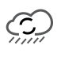

Search Proteins
Search
Help
Cys-Oxidation Stochiometry
Modified Positions
Sequence Map
Site Stoichiometry
Order By Tissue
Site Information
Click on a site in the heatmap or sequence map for more information.
Toggle Site Table
No protein with that Gene Symbol or Uniprot accession was observed in the OxiMouse dataset.
Query:
For a complete list of OxiMouse data, visit the
Download
page.
The underlying data is still loading, please wait a moment and try again.
Loading data...
